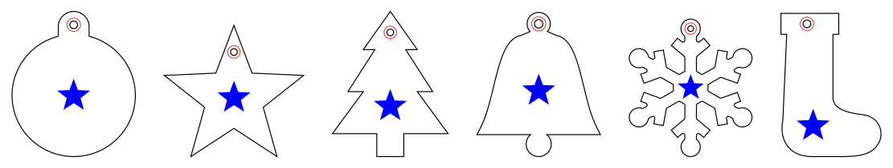
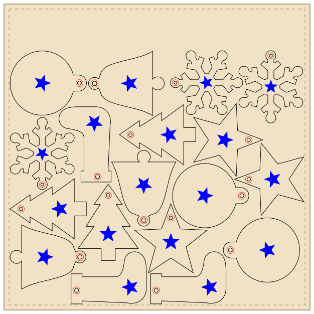
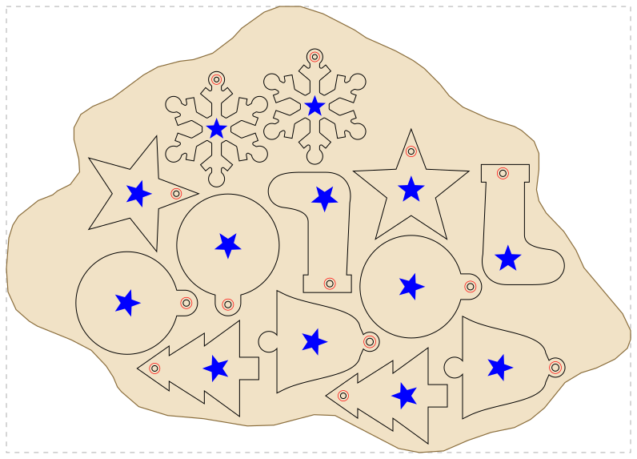
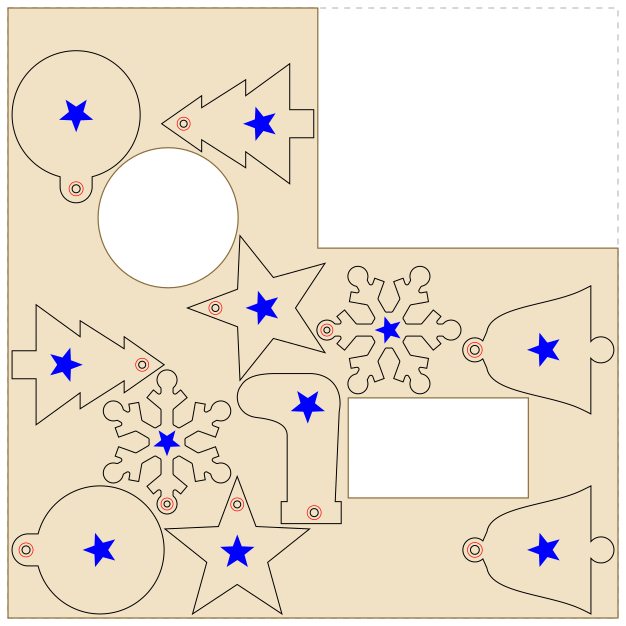

LightBurn nesting without Pro, including onto offcuts: True Nest, Quick Nest and Nestbolt compared
In LightBurn 2.2, True Nest (nesting by each shape's real outline) needs a Pro licence: $199 new, or a $100 upgrade from Core's $99. Core keeps Quick Nest, which packs each object's bounding rectangle into a rectangle you draw, and SVGNest (External Tool), which sends your shapes to the SVGnest.com website and back. On 2026-11-02 we nested a LightBurn project of six engraved ornament designs, with cut, fill-engrave and score layers, using the free Nestbolt v0.2.0-alpha.1 command-line tool, whose LightBurn support is a preview feature. It placed 18 ornaments on one 12 × 12 inch sheet, 13 on an irregular offcut and 11 on a partly used sheet with two holes. Each sheet came back as an editable .lbrn2, with every layer's settings byte-identical and every engraving moved with its part, checked by our own script (method and data below).
We make Nestbolt. We did not run LightBurn, so this page makes no claim about how densely True Nest or Quick Nest packs. Everything about LightBurn comes from its own documentation, release post, price pages and forum, read on 2026-11-02 and linked below. Last checked: 2026-11-02.
Your nesting options as a LightBurn Core user
| Option | Licence and price | Nests by | What it nests into | Rotation | Where it runs |
|---|---|---|---|---|---|
| True Nest (LightBurn 2.2) | LightBurn Pro only: $199 one-time with a year of updates, or a $100 Core-to-Pro upgrade; a two-week Trial Pro from Help → License Management | The objects' actual contours | A rectangle you draw and select as the container; Multipage adds pages with copies of it | "Allowed Orientations" from 1° steps to 90° steps, or locked | Inside LightBurn, locally |
| Quick Nest (LightBurn 2.1 and later) | Core and Pro | Each object's bounding rectangle | An axis-aligned rectangle you draw and select | 90° steps, or locked | Inside LightBurn, locally |
| SVGNest (External Tool) | Core and Pro | Actual shapes, on SVGnest.com | "A container shape", usually one the size of your material | Not covered on LightBurn's page | LightBurn exports an SVG, you nest it on SVGnest.com in your web browser and import the result; LightBurn's comparison table marks it as needing the internet |
| Nestbolt (ours) | Free, MIT licence. LightBurn projects need the v0.2.0-alpha.1 preview (stable v0.1.0 takes SVG and DXF only) | Actual outlines, curves kept; small parts can go inside the holes of larger ones | Rectangular sheets, or an offcut's outline with holes in it, plus areas to keep clear | Free, stepped or a list of angles (its README); this test used 0°, 90°, 180° and 270° | Command line and MCP server on Windows, Linux and macOS, and a browser app that runs on your computer (nothing is uploaded); you move the files between it and LightBurn |
On the container: True Nest's and Quick Nest's getting-started steps both begin "Create a rectangle to use as a container". SVGNest (External) asks for "a container shape", and its page doesn't say it must be a rectangle; it also says shapes inside other shapes are not exported but are moved back with them after the import. When a user asked in September for nesting inside irregular scraps, LightBurn staff member Joe Spanier replied on 22 September 2026, during the 2.2 early access, that arbitrary sheet shapes are "even more complicated" and that there is no specific roadmap for them yet (forum post). We found nothing newer on this. LightBurn's 2.2 release post calls True Nest "the first LightBurn design/layout feature that is limited to Pro licenses only".
The test project: six engraved ornaments in a LightBurn project
The cut outlines are the six ornament designs from our ornament example, each about 3 inches tall with a hanging hole. A script turned them into a LightBurn project, engraved-ornaments.lbrn2, with one group per design and three layers in LightBurn's default colours:
- CUT (layer 00, Line, black): the outline and the hanging hole, with curves kept as Bézier curves.
- ENGRAVE (layer 01, Fill, blue): a star on the face of each ornament.
- SCORE (layer 02, Line, red): a ring around the hanging hole.
The layer settings are placeholders that show they come through unchanged (CUT 10 mm/s at 70%, ENGRAVE 200 mm/s at 25%, SCORE 100 mm/s at 15%). Set your own for your machine. LightBurn itself did not open or save this file; Nestbolt's own tests with projects saved by LightBurn are in its LightBurn notes.

engraved-ornaments.lbrn2: bauble, star, tree, bell, snowflake and stocking.Measured: one full sheet and two offcuts
All runs used the v0.2.0-alpha.1 Windows x64 release (its SHA-256 and build provenance checked), on a Windows desktop PC, with a 30-second budget in repeatable mode at seed 0 and 2 mm between parts. "Place what fits" is Nestbolt's fill_area mode, a quick layout that fills as much area as it can from the copies offered. "Most found" is the default mode, which must place every part: we raised the number of ornaments, cycling through the six designs, until it could no longer place them all.
| Stock | Material | Edge spacing | Place what fits | Most found |
|---|---|---|---|---|
| Full 12 × 12 inch sheet (5 mm margins) | 92,903 mm² | 1 mm | Not used | 18 of 18 requested (3 of each design) in 3.3 s, covering 45.6% of the sheet |
| Traced offcut (about 390 × 278 mm across) | 71,384 mm² | 5 mm, to allow for tracing error | 12 of 24 offered in 0.9 s: 4 each of bauble, bell and stocking, the largest designs, covering 47.4% | 13 (3 baubles, 2 of each other design) in 1.3 s, covering 44.3%; 14 were not found even with 120 s |
| Partly used 12 × 12 inch sheet with two holes | 66,560 mm² | 2 mm | 11 of 18 offered in 1.1 s, covering 42.6% | 11 in 1.7 s, covering 38.7%; with a 120 s budget, 12 (2 of each) in 6.1 s, covering 42.4%; 13 were not found |

full-sheet-18-sheet.lbrn2. The dashed line is the 5 mm margin.The offcut is the plywood offcut from our scrap example: its outline was traced from a computer-rendered picture with Maskbolt, so the edge spacing of 5 mm covers the tracing error measured there (at most 4.3 mm). The partly used sheet is a 12 × 12 inch sheet from which an earlier job took a 150 × 120 mm corner, a 70 mm disc and a 90 × 50 mm plate. Its outline comes from that job's own file, so 2 mm from the edges is enough.

traced-offcut-13-sheet.lbrn2. The dashed rectangle is the offcut's bounding box.
partly-used-11-sheet.lbrn2.What came back in LightBurn's format
A separate script, check.py, read the input project and every output sheet itself and uses none of Nestbolt's code. On all six layouts above:
- Every ornament is a copy of a group in the project, with the same three children in the same order, on the same layers, and their path data unchanged. The number of copies matches the request.
- One move per ornament. Every point and curve handle of an ornament, on all three layers, moved by the same rotation (0°, 90°, 180° or 270°) and shift, to within 0.000001 mm. Nothing was mirrored, so each star and ring stays where it was on its part.
- Layer settings unchanged. The three layers' settings are byte-for-byte the same as in the input. Each sheet adds one thing: a rectangle on LightBurn's T1 tool layer, named SHEET, which marks the stock and is not cut. On an offcut it is the outline's bounding box, not its shape. Leave it out with
--sheet-outline false. - Geometry. Stars and rings lie on their ornament and clear of its hole, and parts keep the requested spacing from each other and from the stock's edges and holes. The edges were sampled, so these distances are accurate to about 0.01 mm.
- Repeatable. Two runs of each request file gave byte-identical sheets and layouts.
One thing we did not expect: on both offcuts, Nestbolt kept parts as far from each other as from the edge, using whichever of the two settings is larger. With a 5 mm edge spacing on the traced offcut, the closest two ornaments are 5.01 mm apart, not 2 mm. On the full rectangular sheet the two settings stayed separate. So on an offcut, use the smallest edge spacing your outline allows.
How to nest your LightBurn project onto an offcut
- In LightBurn, group each part with its engraving and score lines, then save a copy of the project. Nestbolt moves each group as one piece. Text without embedded outlines must be re-saved in LightBurn or converted to paths first (preparation notes).
- Draw or trace the usable outline of the offcut, with any holes, and export only that outline as SVG or DXF.
- In the browser app, open the
.lbrn2project, set the quantities, and under the sheet size choose the outline file as Remnant outline. Set the part and edge spacing, nest, and download the LightBurn sheet. - Open the sheet in LightBurn and check it before you cut. The parts sit inside the offcut's bounding box, which starts at the origin and is marked by the T1 rectangle. Line that box up with your offcut before cutting.
We ran steps 3 and 4 up to the download in the live browser app on 2026-11-02, in a headless Chromium with a fresh profile. We opened the project, set 2 of each design, and chose the traced offcut as the remnant outline, with 2 mm part and edge spacing. The app placed 12 of 12 in its 30-second run, reported the check as valid, and downloaded browser-traced-offcut-12-sheet.lbrn2, which passed the same independent check. The hosted app is built from Nestbolt's main, whose engine and browser code are unchanged since v0.2.0-alpha.1.
On the command line, give the offcut as outline_mm in the request: its outer ring and holes in millimetres, Y up, inside width_mm × height_mm. See the traced-offcut request. A SHEET drawing of the partly used sheet for the browser app is in partly-used-sheet.svg, and the traced offcut is in traced-offcut.svg.


When to use True Nest, Quick Nest or SVGNest instead
- You already have Pro, or the $100 upgrade is fine. True Nest nests what you select in your LightBurn workspace, with no files to move between programs. LightBurn says a few sheets' worth of savings should pay for it, and the two-week Trial Pro lets you check that on your own jobs.
- Finer rotation. True Nest's Allowed Orientations go down to 1° steps. We tested Nestbolt's LightBurn route with quarter turns only.
- Loose artwork and text. True Nest's Lock Inner Objects keeps inner shapes with the shape around them without grouping. Nestbolt needs each part grouped: in our layered-kit example, ungrouped engraving that covered a hole was nested as a separate piece, with no warning. Nestbolt also cannot nest text that has no embedded outlines until it is re-saved.
- A finished feature. True Nest ships in LightBurn 2.2.00, while Nestbolt's LightBurn support is a preview release, and LightBurn did not open the files in this test.
- Mostly rectangular parts. LightBurn's docs say the difference between True Nest and Quick Nest is small when parts are close to rectangles. Quick Nest is in Core and is fast.
- You are on Core and a website round trip is fine. SVGNest (External) nests by real shape at no extra cost, into a container shape you select, and LightBurn's page says shapes inside your parts are moved back with them after the import. We did not run it.
Nestbolt fits when you want nesting by real outline without Pro, nesting onto an offcut or a partly used sheet, or one editable LightBurn file per sheet from the command line or an AI agent.
Limits of this test
- LightBurn project nesting is a preview feature, and LightBurn did not open these files during this test. Open each sheet in LightBurn and look at it before you cut.
- One project, three stocks, 30-second budgets, seed 0, one build. Another budget, seed, build or platform can nest differently; failing to find 14 or 13 shows the limit of this search, not that they cannot fit.
- The traced offcut comes from a computer render, not a phone photo. Measure a real offcut before you rely on a traced outline, and test-cut one part first.
- Kerf in a layer's settings does not change part spacing. Set the spacing to cover your kerf.
Reproduce it
With the v0.2.0-alpha.1 release, in a new folder holding engraved-ornaments.lbrn2 and the request files (Nestbolt refuses to overwrite existing output):
nestbolt import engraved-ornaments.lbrn2 --output library.jsonlists the three layers and six parts,engraved-ornaments-unit-1to-6. The request names parts by these IDs, which come from the file name.nestbolt nest --library engraved-ornaments.lbrn2 --request full-sheet-request.json --out-dir out-full --seconds 30 --repeatablewritesengraved-ornaments-sheet-1.lbrn2,layout.jsonandreport.json. The same command withtraced-offcut-request.jsonorpartly-used-request.jsongives the "place what fits" layouts, and withall-traced-offcut-13-request.jsonorall-partly-used-11-request.jsonthe "most found" ones.python check.py engraved-ornaments.lbrn2 full-sheet-request.json out-full/engraved-ornaments-sheet-1.lbrn2runs our check (it needs Shapely).
All numbers are in results.json. The scripts that made the project, searched for the most ornaments, drew the figures and drove the browser are kit.py, maxfit.py, render.py and browser_flow.mjs. The ornament outlines, project, requests and sheets were made for this page and are MIT licensed, like Nestbolt.
How we checked
- The searches. We ran five searches a LightBurn user might make, such as "LightBurn nesting without Pro" and "nest LightBurn project onto scrap offcut irregular material". Nestbolt appeared in none. The results were LightBurn's forum and docs, laser-vendor help pages and listing sites, and two summaries said they found no free tool that reads
.lbrn2files and keeps their layers. The queries and results. - LightBurn. We read its nesting docs (True Nest, Quick Nest and SVGNest pages), the 2.2 release post, the licence page and the upgrade page ($100.00; it "does not add a year of updates"), and forum topic 192508, on 2026-11-02. LightBurn was not run.
- Nestbolt. The release archive was downloaded from GitHub, checked against its
SHA256SUMSand its build attestation, and run as described above. - Refresh. This page is re-checked every 30 days, or sooner when LightBurn or Nestbolt releases.